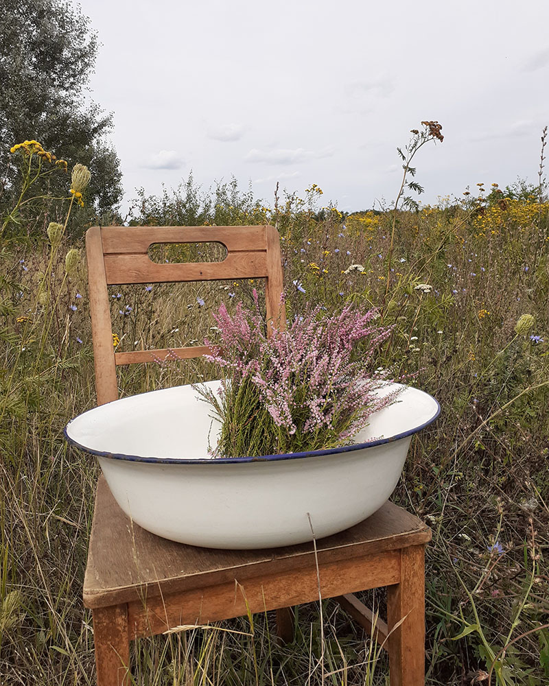
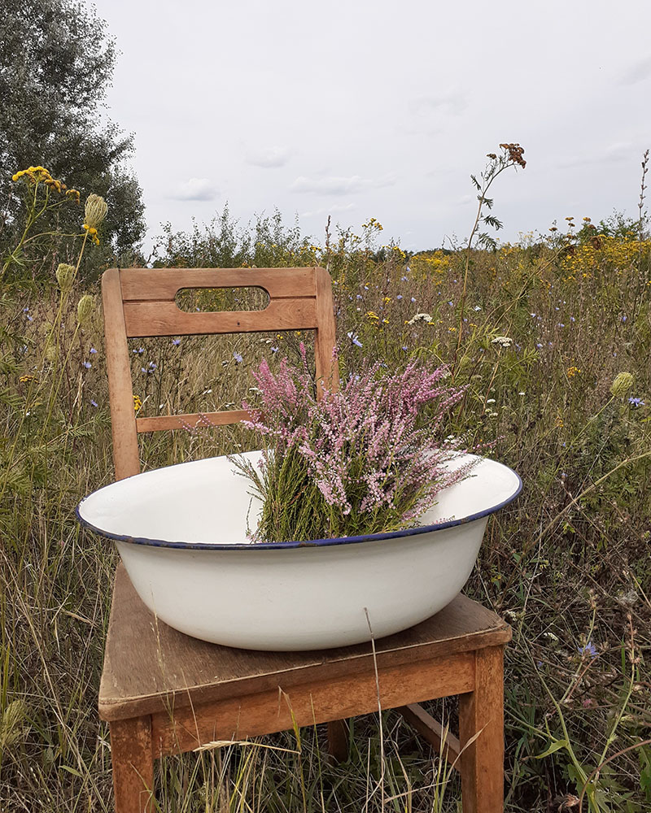
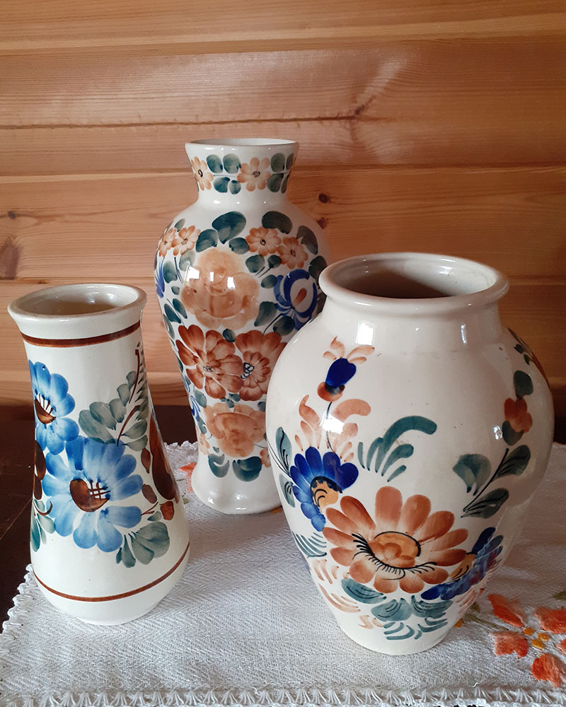
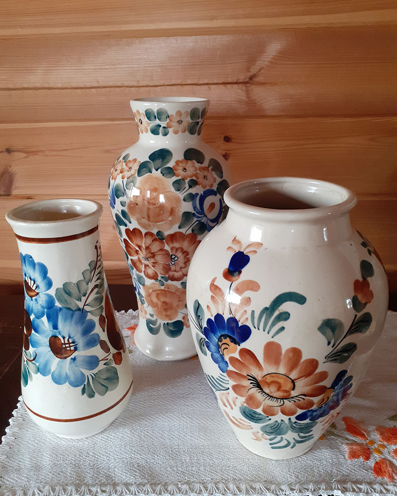
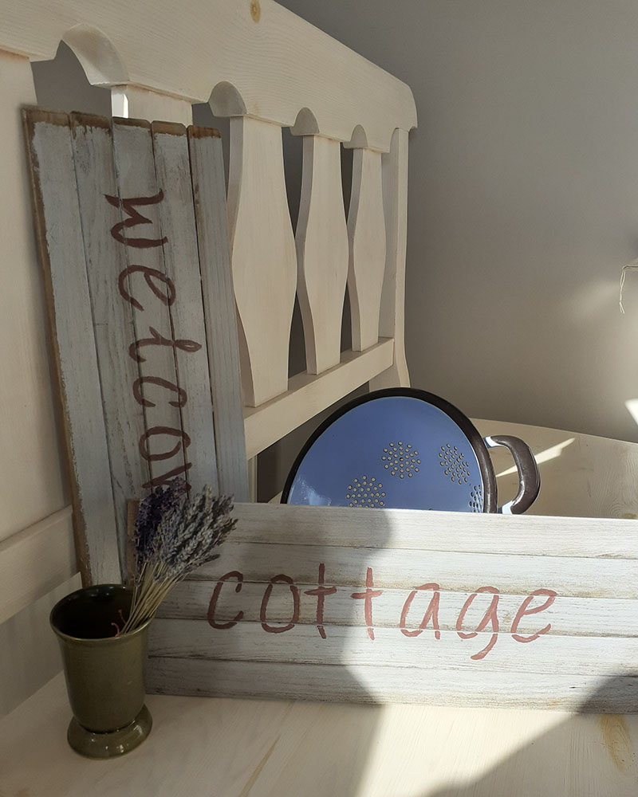
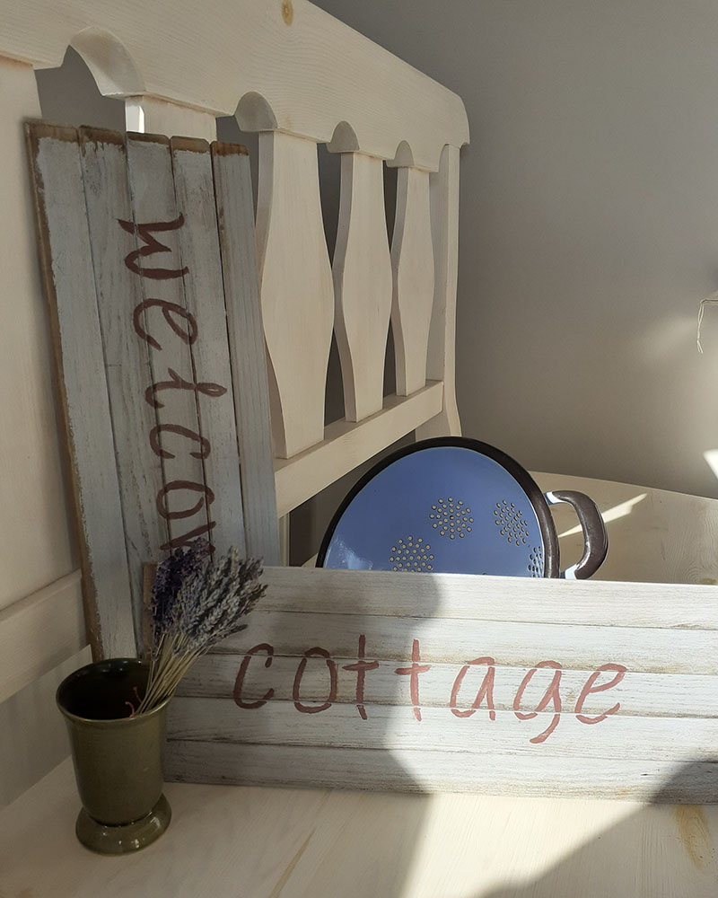
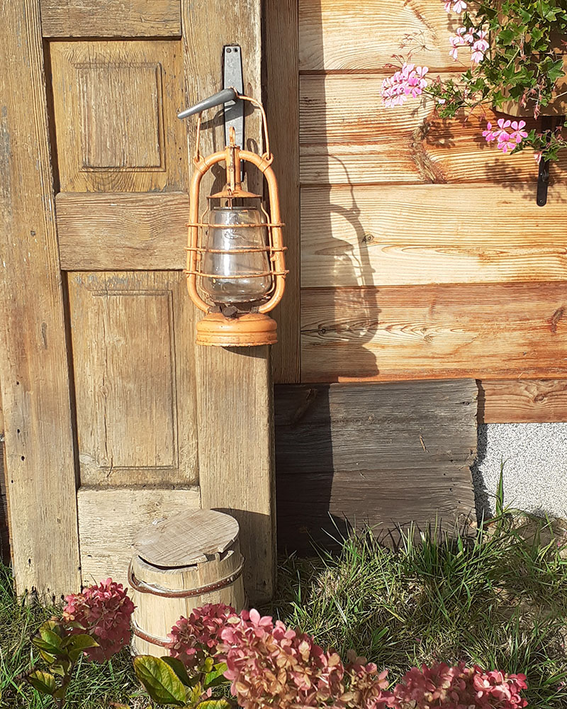
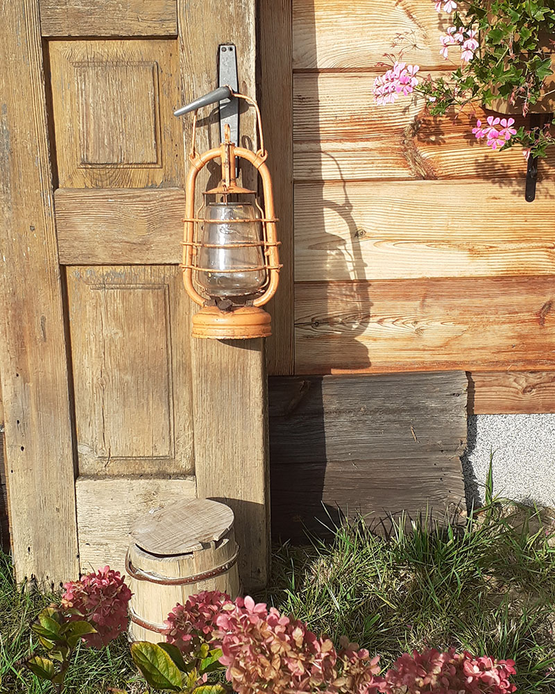

Zielona Kanapa - sklep
Zielona Kanapa
to sklep stacjonarny, który powstał z miłości do pięknych starych przedmiotów, oferujący używane rzeczy stylowe, dekoracje z duszą, starocie, vintage. Jakbyśmy tego nie nazwali, to jedno jest pewne, każdy tu znajdzie dla siebie coś nietuzinkowego. Każda rzecz ma swoją historię, swój niepowtarzalny urok. Znajduje się w Lesznie, 25 minut jazdy od Warszawy, na trasie Warszawa-Żelazowa Wola. Leszno, al. Wojska Polskiego 11.
W moim sklepie znajdziecie: - szkło kolekcjonerskie, elegancką porcelanę, wyroby rękodzieła ludowego, świeczniki, dzbanki, wazony, formy do pieczenia, wagi, młynki, drobne elementy techniki PRL, naczynia emaliowane, wyroby metalowe, naczynia kamionkowe, lustra, obrazki, figurki, puszki i wiele innych drobiazgów. - drobne używane meble, w tym polecam te na nowo przeze mnie pomalowane, - dekoracje do wystroju ogrodu (stare balie, wiaderka, kanki, drobne narzędzia rolnicze), dodatkowo rzeczy z upcyklingu, które sama tworzę.
Coś dla kolekcjonerów, do wystroju wnętrz domów, karczm, restauracji, ogrodów, na prezent. Po prostu rzeczy z duszą, ponadczasowe z materiałów i w stylach, których już ze świecą szukać. Mam sporą kolekcję polskiego fajansu, porcelany i porcelitu: Włocławki, Pruszków, Chodzież, Lubiana, Tułowice. Ale także zagraniczną porcelanę, min.: bawarską i angielską. Polecam szczególnie dekoracje z motywami ptaków, których oferuję sporą kolekcję. Pochodzenie: Polska i Europa. Ciekawe są wyroby z regionu Bałkan. To nie są antyki, nie oferuję także wyrobów z kamieni i metali szlachetnych.

 

 

 


 
